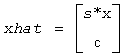
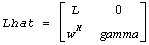
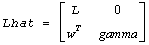

Intel® oneAPI Math Kernel Library Developer Reference - Fortran
Applies one step of incremental condition estimation.
call slaic1( job, j, x, sest, w, gamma, sestpr, s, c )
call dlaic1( job, j, x, sest, w, gamma, sestpr, s, c )
call claic1( job, j, x, sest, w, gamma, sestpr, s, c )
call zlaic1( job, j, x, sest, w, gamma, sestpr, s, c )
The routine ?laic1 applies one step of incremental condition estimation in its simplest version.
Let x, ||x||2 = 1 (where ||a||2 denotes the 2-norm of a), be an approximate singular vector of an j-by-j lower triangular matrix L, such that
||L*x||2 = sest
Then ?laic1 computes sestpr, s, c such that the vector

is an approximate singular vector of
 (for complex flavors), or
 (for real flavors), in the sense that
||Lhat*xhat||2 = sestpr.
Depending on job, an estimate for the largest or smallest singular value is computed.
For real flavors, [sc]T and sestpr2 is an eigenpair of the system
where alpha = xT*w .
For complex flavors, [sc]H and sestpr2 is an eigenpair of the system
where alpha = xH*w.
INTEGER.
If job =1, an estimate for the largest singular value is computed;
If job =2, an estimate for the smallest singular value is computed;
INTEGER. Length of x and w.
REAL for slaic1
DOUBLE PRECISION for dlaic1
COMPLEX for claic1
DOUBLE COMPLEX for zlaic1.
Arrays, dimension (j) each. Contain vectors x and w, respectively.
REAL for slaic1/claic1;
DOUBLE PRECISION for dlaic1/zlaic1.
Estimated singular value of j-by-j matrix L.
REAL for slaic1
DOUBLE PRECISION for dlaic1
COMPLEX for claic1
DOUBLE COMPLEX for zlaic1.
The diagonal element gamma.
REAL for slaic1/claic1;
DOUBLE PRECISION for dlaic1/zlaic1.
Estimated singular value of (j+1)-by-(j+1) matrix Lhat.
REAL for slaic1
DOUBLE PRECISION for dlaic1
COMPLEX for claic1
DOUBLE COMPLEX for zlaic1.
Sine and cosine needed in forming xhat.